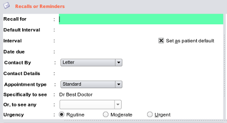

Recall Edit Area
Though this may seem like a tedious and complex set of options, 99% of the time these will be automatically set, and all that
you as the user need to do is to pick the recall from a list, and all these will automatically set without intervention from the user. It
is only if you need to optomize a recall for a particular patient that these need be changed.

- Recall For - the reason for the recall or reminder. A number of these are supplied in the database, but you may add as many as you need as you go
- Default Interval - the usual interval for a recall (eg 2Y for a PAP smear) will always be used to calculate the interval date when this recall is first chosen
- Interval - is the actual interval for the current recall and will be assumed to be the default interval, but may be re-set to any interval and set as
the default interval always for this patient by checking the 'set as patient default' checkbox
- Date Due - will be automatically calculated from the interval
- Contact by - combo contains options such as the default 'letter', to home phone, mobile email etc (if they exist for the patient) or you may type in
the contact method in the 'contact details' field
- Appointment Type - will default to Standard consultation but can be changed
- Specifically to see - will default to the user logged onto the system, however, it this is deleted, the combo box underneath will be enabled and allow you
to choose options such as 'any nurse', 'any doctor'
- Urgency - will default to routine